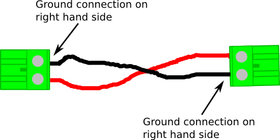

Figure 1 - Overview of complete student robotics kit For information on each module, see the module specific documentation pages.
Connecting up your kit
Before you start
Before assembling your student robotics kit, you should ensure you have, and can identify each of the components shown in Figure 1. You will also need to make the power connectors to connect the power board to the Motor and PWM Board. Pay close attention to the polarity of the connectors, they should look like Figure 2. All other connectors are supplied as part of your kit.
Figure 2 - Camcon power connections
Making connections
- Connect the Power, JointIO and PWM boards to the power board using the black/gray RJ11 cables
- Connect the Power Board's 12V rail to the Motor board's 12V power rail
- Connect the Power Board's 5V rail to the Servo board's 5V power rail
- Connect the Logic Switch and Charge Run switch (supplied, pre-made) to the appropriate power board connectors
- Connect the USB Hub's Power socket to the USB Hub 5V rail on the Power board. Do not connect the USB Hub Power to the 12V rails - this will break things
- Connect the USB Hub's mini-USB socket to one of the USB ports on the Slug.
- Connect the Webcam to one of the spare USB ports on the USB Hub
- Connect the USB Stick with the Green/Yellow tape on it to the USB Hub - this USB Stick should never be removed!
- Ensure the logic switch is in the OFF position
- Connect the battery to the power board, ensuring that the positive terminal of the battery is connected to the positive terminal at the power board
- Connect the charger to the mains and to the charging socket on the power board. Switch on the charger
Powering up your robot!
When you have followed all of the above steps, you are ready to turn on your robot! Switch the logic switch into the 'On' position. You should observe the following:- 'The Master Power', '3.3V Logic Power' & '5V Slug Power' LEDs will illuminate on the power board
- The green light on the front of the Slug will be on
- The lights on the USB Hub will be on
- The lights on the USB Key will eventually begin flashing
- The 3V3 Led will be lit on all of the modules
Charging your robot
If you robot is in charge mode, the Charge/Run LED will be OFF. If it is ON, your robot's battery will not charge, so press the Charge/Run Switch Now!Running code on your robot
After writing some code in the Student Robotics IDE, you will want to run it on your robot. There are a number of steps involved:- Checkout your code from the IDE and save the 'robot.zip' file it generates onto the USB Key which does not have tape on it.
- Insert the USB Key into your robot's USB Hub (you can do this after switching your robot on)
- Wait until LED 0 on the Power board flashes, this indicates that your robot is ready to start running your code
- Press the competition button on the Power board to start running your code